objektbiografie

rückbau
...
Rückbau
...es waren einmal, vor langer, langer Zeit, zwei kleine Kiesel Unsere beiden Kiesel sind vor etwa 20'000 Jahren in der letzten Eiszeit entstanden: Ein Gesteinsstück in den Alpen zerbrach in zwei Teile und rutschte den Hang hinunter in einen Bergbach. Die kleinen Steine lagen im Bachbett und wurden durch schnell fliessendes Wasser in jahrelanger Kleinarbeit zu zwei hübschen kleinen Kieseln abgerundet.
Dann kam ein gigantisches Hochwasser: Die beiden Kiesel wurden von den Wassermassen bis in die Aare mitgerissen. Dort lagen sie für ein paar Jahrzehnte. Beim nächsten Riesenhochwasser schaffte es der eine Kiesel bis ans Rheinknie, wo er zusammen mit Milliarden anderer Kiesel auf einer Kiesbank im breit fliessenden Rhein abgelagert wurde.
Dort lag unser erster Kiesel bis zum Bau des Hafen- und Umschlagplatzes am Klybeckquai 1924/25. Dann wurde er mit einem Bagger während der Hafenbauarbeiten auf die damalige Klybeckinsel transportiert: Die Insel wurde aufgeschüttet und der Rheinarm zwischen Insel und Festland zugeschüttet. Jetzt konnte man Öltanks und die Gleise der Hafenbahn auf der früheren Insel bauen.
Unser zweiter Kiesel wurde genau wie sein Kollege im Rhein abgelagert, aber da er etwas schwerer war, schaffte er es nur bis auf eine Kiesbank südlich von Grenzach-Whylen. Dort wurde er Bestandteil einer grossen Schotterterrasse am Rhein. Diese Schotterterrasse war im 20. Jahrhundert ein idealer Kiesgruben-Standort: Die Holcim AG - der grösste Betonhersteller der Schweiz - baute dort Milliarden an Kieseln ab, verlud sie per Förderband auf ein Rheinschiff und brachte sie zum nächsten Betonwerk. Dort wurden die Kiesel in Beton eingegossen und der Beton zum Bau eines Öltanks auf der Klybeckinsel verwendet.
Unsere beiden Kiesel, die zusammen in den Alpen aus einem Gesteinsbrocken entstanden waren, gingen also getrennte Wege, bevor sie sich wieder auf der Klybeckinsel trafen: Der Eine landete als umgelagerter Kiesuntergrund im Boden der Klybeckinsel, der Andere wurde in Beton eingebaut und landete in der Betonwand eines Öltanks auf der gleichen Insel.
Und was passiert jetzt? Die Öltanks werden nicht mehr gebraucht, der Kiesboden ist ölverseucht. Alles auf die Deponie? Dort wird der Platz immer knapper und Deponieraum ist teuer. Und ausserdem steckt in unseren kleinen Kieseln wertvolles Baumaterial für die nächsten Generationen. Denn Kiesel sind massive kleine Steine und daher innendrin ganz sauber.
In Basel-Stadt ist Nachhaltigkeit angesagt: Der alte Beton wird nicht deponiert, sondern in einem Betonbrecher zerkleinert und zu neuem Beton verarbeitet. Und der ölverseuchte Boden kommt in die Bodenwaschanlage in Rümlang ZH, wo das Öl von den vielen kleinen Kieseln gewaschen wird. Die Kiesel landen dann im Betonwerk wenige Hundert Meter weiter. Jetzt geht die Reise von neuem los und bald werden aus unseren Kieseln neue Gebäude entstehen.
Nanosilber
Nanosilber ist neuerdings allgegenwärtig: Sportsocken, Kühlschränke, Kosmetika – überall ist plötzlich die Rede vom edlen Silber, dass vor unangenehmen Gerüchen und Bakterien schützen soll und Hautcrèmes haltbarer macht als je zuvor. Denn: Silberionen wirken antibakteriell. Sie sind insbesondere in der Lage, Zellmembranen zu durchdringen und den Stoffwechsel von Mikroorganismen zu schädigen. Silberionen in der Medizin sind an sich nichts neues, denn Silberpräparate wurden schon im 19. Jahrhundert zur Bekämpfung von Infektionen verwendet. Als nach dem 2. Weltkrieg bessere und billigere Verfahren zur Infektionsbekämpfung zur Verfügung standen, ging die Bedeutung von Silber im medizinischen Bereich allerdings zurück. Der desinfizierende Effekt von Silber ist umso grösser, je grösser die Oberfläche der verwendeten Silber-Teilchen ist. Sind die Teilchen kleiner als 100 nm (ein Nanometer ist ein millionstel Millimeter oder 10-9 Meter), spricht man von Nano-Silber. Und genau um diese winzig kleinen Teilchen geht es, denn Materialien in Nano-Grösse haben wegen ihrer grossen Oberfläche häufig andere Eigenschaften als die gleichen Materialien mit kleinerer Oberfläche. Nanopartikel lassen sich Dank moderner technischer Verfahren immer einfacher und billiger herstellen. Die Folgen für Umwelt und menschliche Gesundheit sind jedoch nur schwer abschätzbar [1]. Silberionen sind giftig für Fische und andere Wasserlebewesen und das offenbar in weitaus stärkerem Mass, als bislang angenommen. Denn die grossen Oberflächen der Kleinstpartikel erhöhen nicht nur die Wirksamkeit gegenüber unerwünschten Keimen, sondern logischerweise auch die Wirksamkeit in der Umwelt. Dazu gibt es endlose Diskussionen darüber, ob die Anwendung von Silberionen im Haushaltsbereich nun Allergien fördert oder eben nicht. Das in Berlin ansässige Bundesinstitut für Risikobewertung [2] findet die Silber-Anwendungsschwemme aus ganz anderen Gründen nicht lustig: Die gesundheitlichen Risiken beim dauerhaften Kontakt mit Silberionen seien nicht abschliessend bekannt, zudem seien bereits Resistenzbildungen von Bakterien beobachtet worden. Daher sei die Anwendung von Nanosilber auf unabdingbar notwendige Einsatzbereiche zu beschränken.
Und die Silber-Socken im Supermarkt? Sind die unabdingbar notwendig? Ich meine, Socken kann man auch waschen, wenn sie anfangen zu riechen, oder? Ich werde den Verdacht nicht los, dass die Silberindustrie nach dem Wegfall des Silberbedarfs in der Analog-Fotografie dringend nach neuen Anwendungsbereichen für Silber sucht – seien sie nun sinnvoll oder nicht. Doch vielleicht sollten wir das Silber auf der Erde lieber für nettere Anwendungen reservieren. Silberschmuck zum Beispiel oxidiert nicht, solange er trocken aufbewahrt wird – eine wirklich nachhaltige und zudem ästhetische Anwendung.
[1] Bundesamt für Umwelt, Bern (2014): Aktionsplan Synthetische Nanomaterialien:
Zweiter Bericht des Bundesrates über den Stand der Umsetzung, die Wirkung und den Re-gulierungsbedarf, 40 S. Abrufbar unter www.bafu.admin.ch.
[2] Bundesinstitut für Risikobewertung: BfR rät von Nanosilber in Lebensmitteln und Produkten des täglichen Bedarfs ab. Stellungnahme Nr. 024/2010 vom 28. Dezember 2009.
Bodenwaschanlage Rümlang
Kann man Boden waschen? Als ich dies das erste Mal hörte, dachte ich nur: Dann löst sich der Boden doch in Wasser auf und wird zu Schlamm. Das stimmt auch, aber nur für den Feinanteil. Die Böden, die in der Bodenwaschanlage in Rümlang ankommen, stammen häufig aus Industriebrachen im Mittelland. Hier gibt es viele Böden mit kiesigem Untergrund – Industriequartiere stehen bevorzugt in den Ebenen, wo sich viel eiszeitlicher Schotter abgelagert hat.
Durch mehrmaliges Waschen und Spülen, durch Siebe und Sandabscheider wird der Boden in die verschiedenen Korngrössen-Anteile zerlegt: Grosser Kies, mittlerer Kies, feiner Kies, verschiedene Sandfraktionen. Ein riesiges Labyrinth an Förderbändern, Absetzbecken, Mulden und Wasser-Rohren, an dem ständig weiter getüftelt wird. Schlussendlich muss dann nur der Feinanteil der kontaminierten Böden deponiert oder auch verbrannt werden. Alle gröberen Bestandteile gelangen ins Betonwerk nebenan und werden zu Beton und anderen Baustoffen weiterverarbeitet.
Spezielles Detail: Seit einigen Jahren werden nicht nur Öl- und sonstige schadstoffhaltige Böden gewaschen, sondern die Bodenwaschanlage in Rümlang hat sich auch auf Bodenmaterial aus den zahlreichen schweizerischen Schiessständen „eingeschossen“. Dabei wird aus den Böden nicht nur der Kiesanteil extrahiert, sondern die bleihaltige Munition gleich mit.
 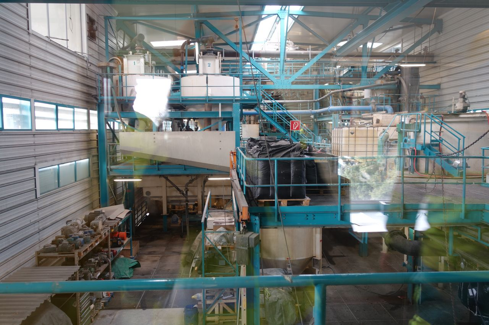
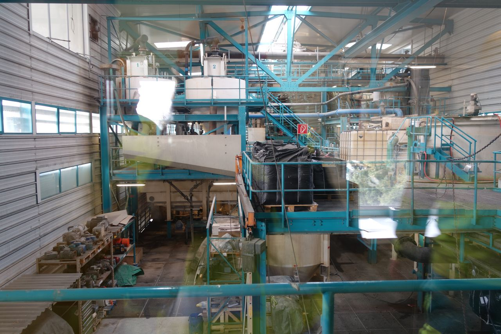

 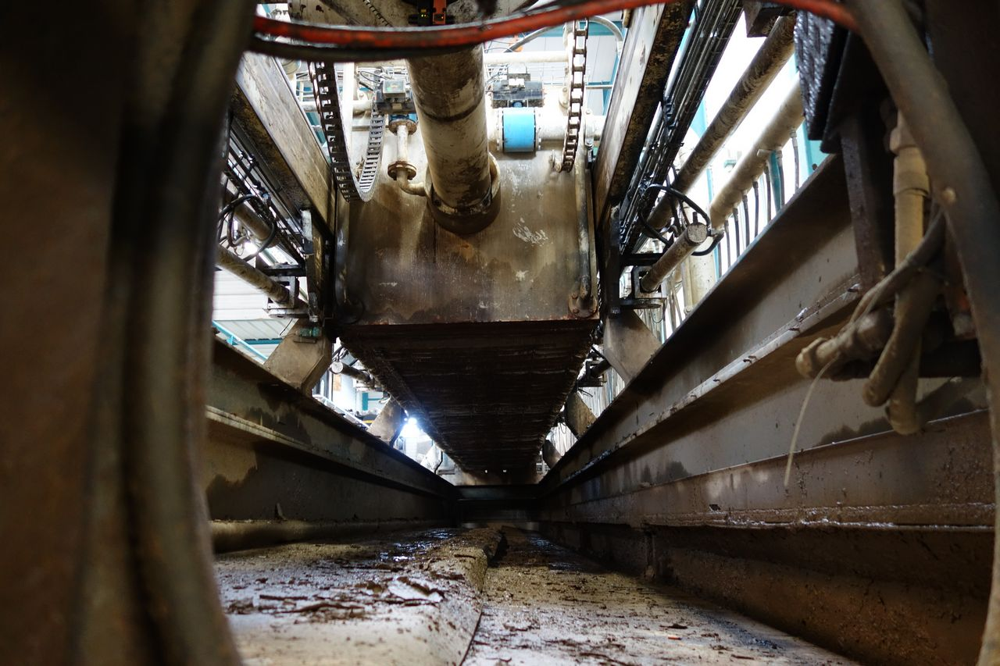
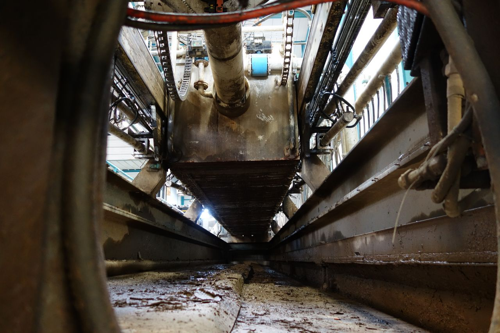
 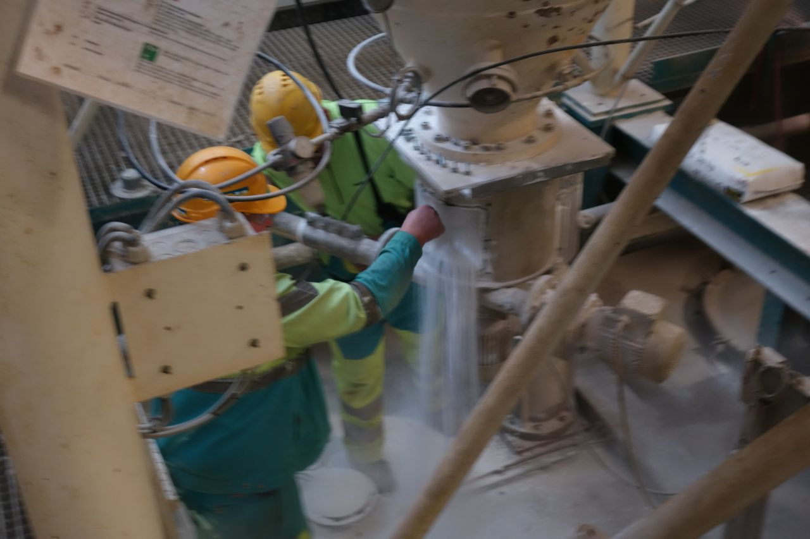
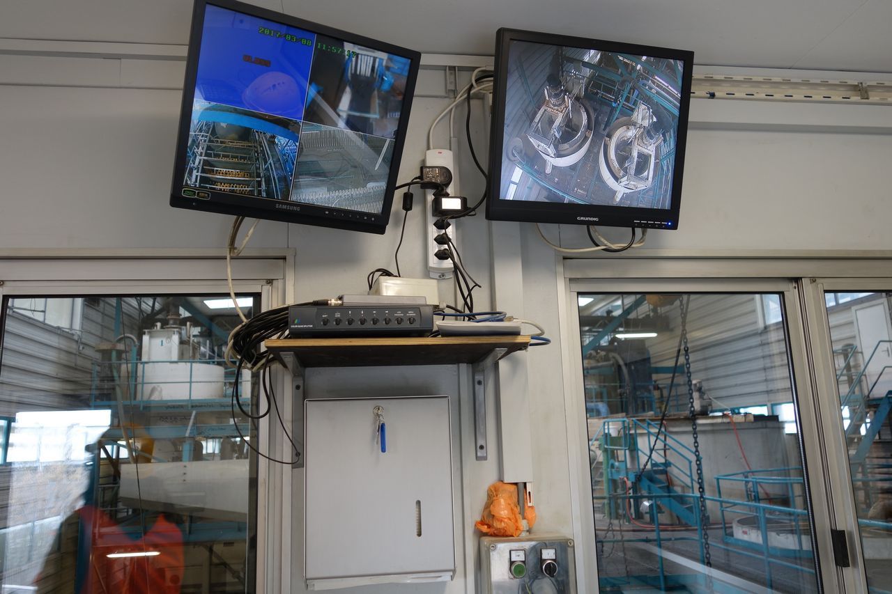
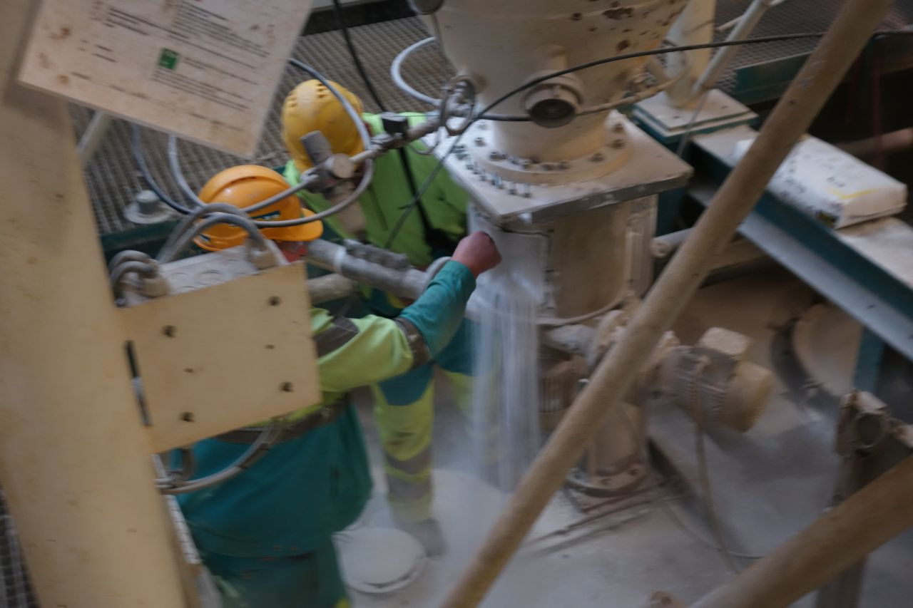
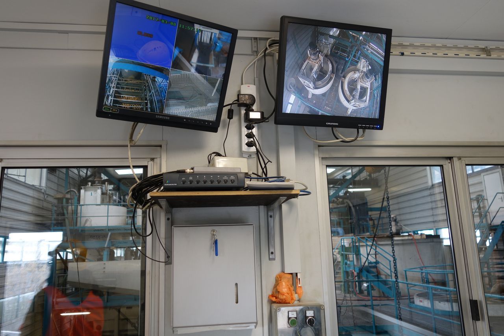
 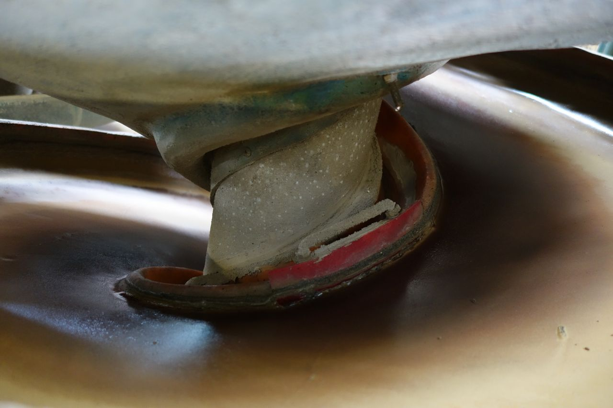
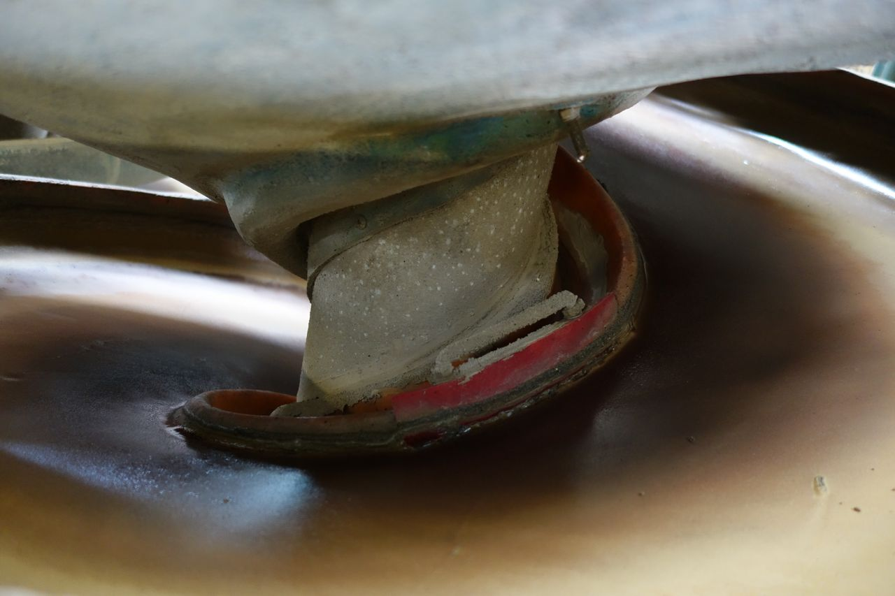
 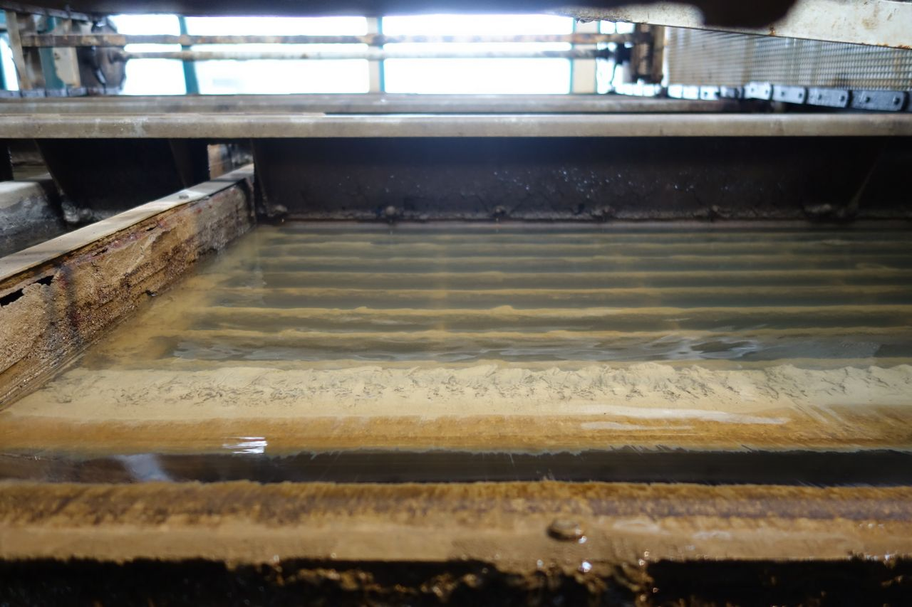
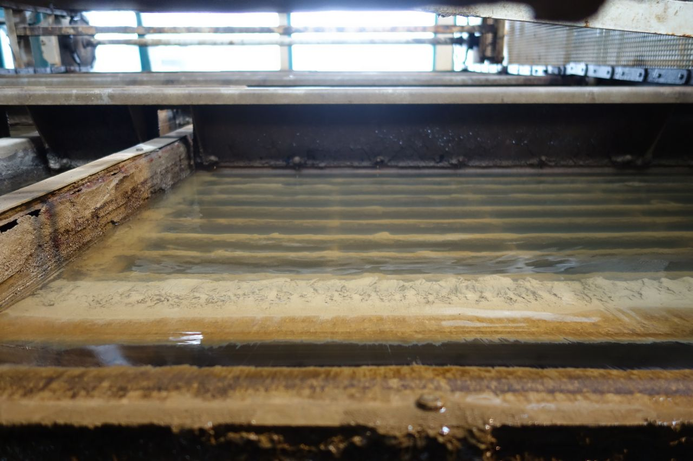
 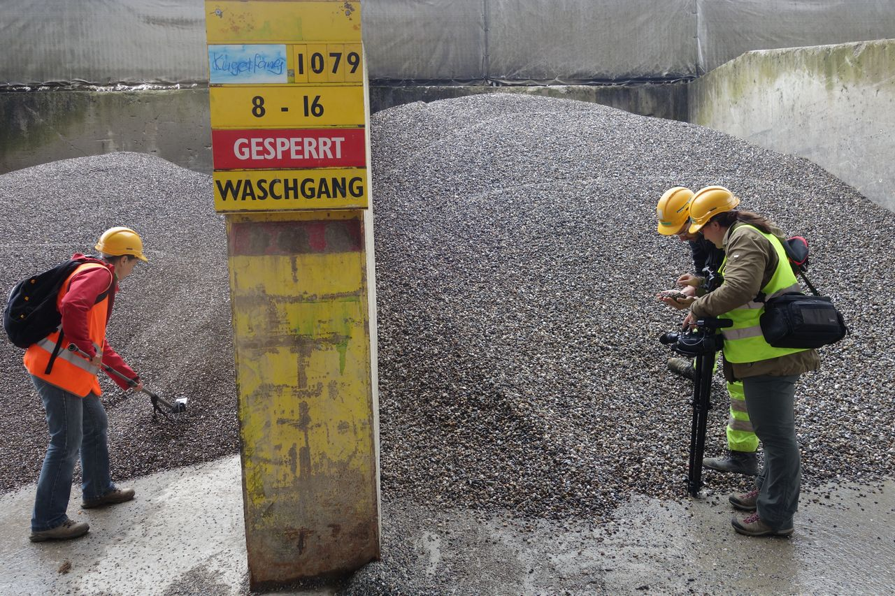
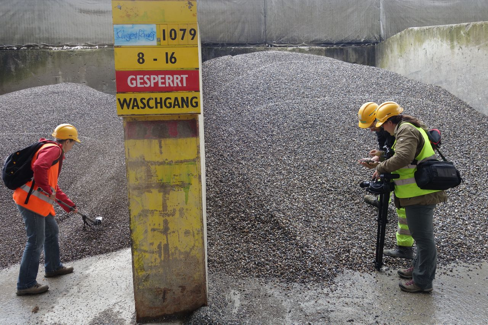


Bodenwaschanlage Eberhard AG Rümlang, Schweiz: Reinigung von Bauschutt und von kontaminierten Böden.
Soundscape zur Schlackendeponie DHZ Lufingen und Metallveredelung Oberglatt, Schweiz.